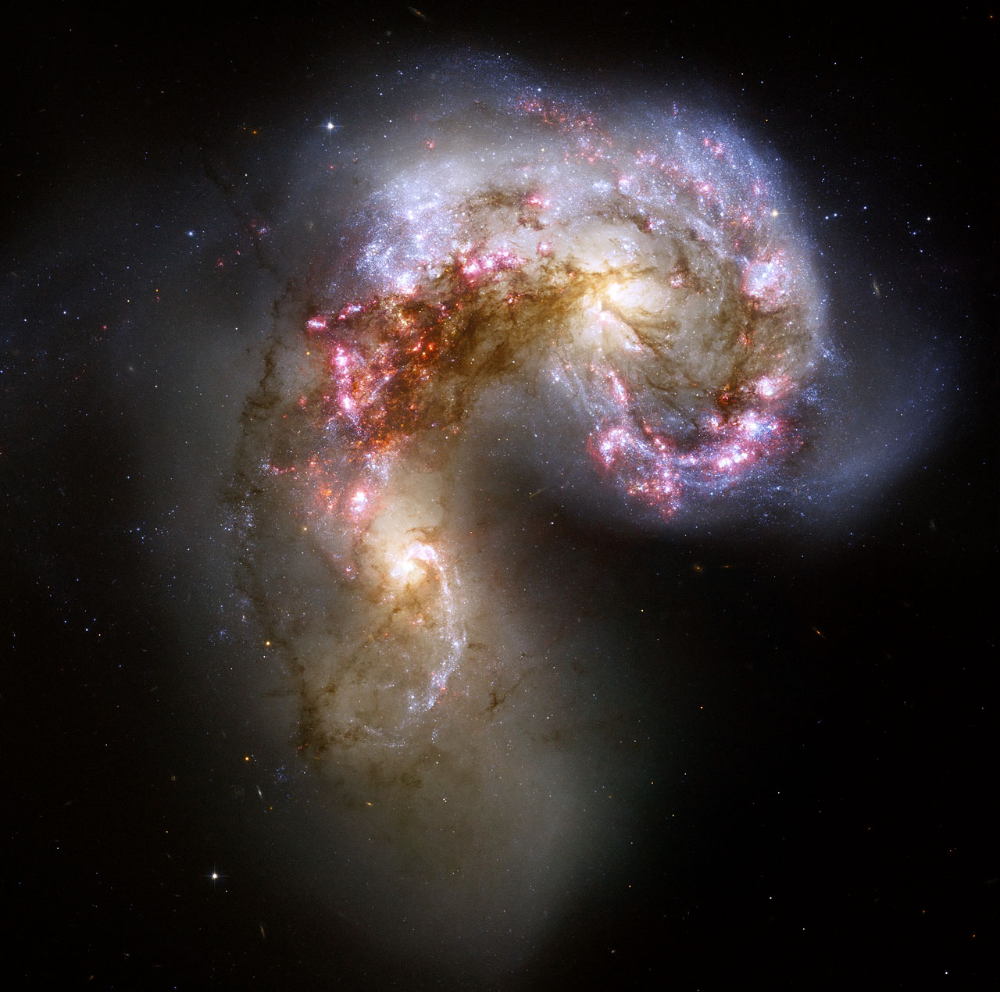
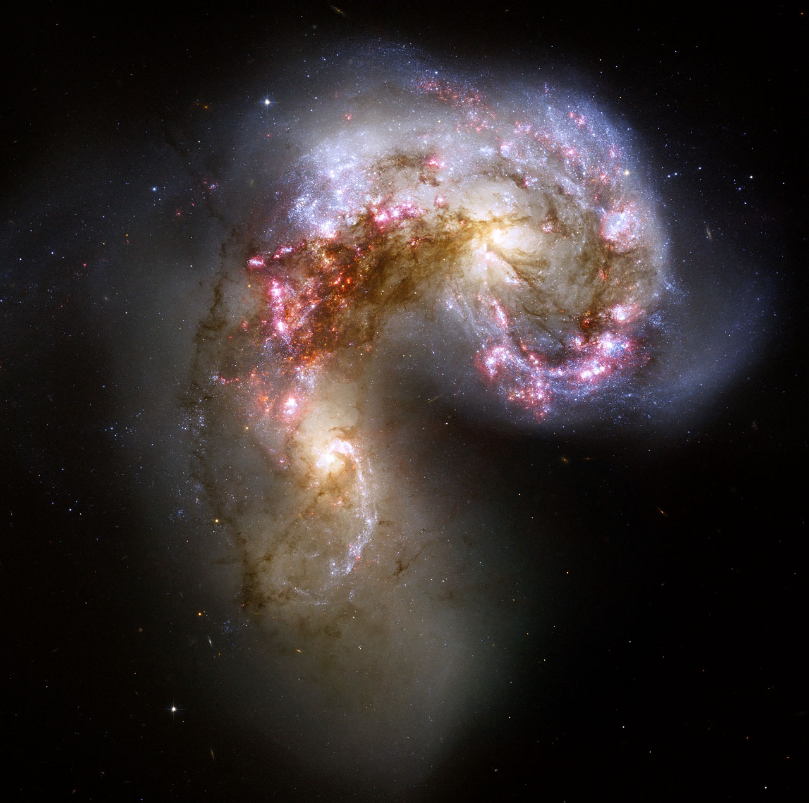

Hubble’s Fork
Jed Rembold
March 15, 2023
Announcements
- HW4 being released in stages
- First two problems hopefully currently posted
- Groups posted at end and also will go out via email
- HW3 Partner Reflections here
Recap
- Determining the shape of an object while inside it is a non-trivial
task
- Distance measurements are vital to piece together the shape of the
Milky Way
- Parallax measurements cover a very tiny portion of the
Milky Way, and thus other methods are necessary
- Main sequence fitting
- Cepheid variables have their brightness fluctuate in a way that is
related to their luminosity
Discussing Today
- Basic galaxy formation
- Other examples of galaxies
- Common galaxy classifications
I can see your halo
- Stars in the MW halo are old!
- A smaller fraction of heavy elements than the Sun
- Largely low-mass, red stars
- Stars in the disk are relatively young
- A greater or equal fraction of heavy elements to the Sun
- Lots of high and low mass stars, both blue and red
- Stars in the halo must have formed early in the
Milky Way’s history
- When fewer heavy elements existed
- There is little to no ISM (gas) still in the halo to form stars
from
Problems with Protogalactic Clouds
- Stars and star clusters would be forming the entire way throughout
the cloud’s collapse
- So halo stars far from the center would be older (on average) than
halo stars nearer the center
- Would imply that far away halo stars should have less heavy
elements
- But in truth, all halo stars have about the same
elemental composition
- May suggest a collision between multiple protogalactic clouds?
Galaxy Collisions
- Galaxies tend to cluster in groups, so collisions are a very real
possibility
- Evidence that the Milky Way has already consumed two galaxies in the
past
- The MW will collide with the Andromeda galaxy in about 5 billion
years
Our neighbors: The Magellanic Clouds
 The Magellanic Clouds
The Magellanic Clouds
- Large and Small (about 160,000 and 200,000 lyrs away)
- Irregular dwarf galaxies, though they do have some spiral
structure
- Both orbit the Milky Way (or do they?!)
- Only visible in the Southern hemisphere
Our neighbors: Andromeda Galaxy
Andromeda Galaxy Location
Our neighbors: Andromeda Galaxy
 Andromeda central disk
Andromeda central disk
Our neighbors: Andromeda Galaxy
 Andromeda in IR
Andromeda in IR
 If we could see the fainter
stars
If we could see the fainter
stars
Galactic Flavors
- Looking beyond our neighbors, all galaxies tend to come in one of
three main types:
-
Spiral
-
Elliptical
-
Irregular
 

Spiral Galaxies
- Many of the same characteristics of the Milky Way
- Spiral disk, bulge, halo, etc.
- Can come in normal or “barred” varieties
- Spiral arms can be wrapped to varying degrees
Spiral Arms
- Blue regions indicate star forming regions
- Galaxy rotates at same speed, so inner regions have shorter
periods
- If arms moved with the stars, they would get all wound up!
- Spiral density waves:
- Pinches everything together in that region
- Doesn’t effect normal stars much
- Help molecular clouds collapse to start star formation
Elliptical Galaxies
- Differ from spirals in important ways:
- Have no disk
- Rotate more slowly
- Contain very little gas or dust
- Contain mainly old stars
- Huge range of sizes:
- 0.0001-100 times the MW size
Irregular Galaxies
- The misfits that don’t match one of the other categories
- Often times harbor very active star forming regions
- Sometimes the result of galaxy collisions
Hubble Fork
Hubble’s Classification Fork
Classification with ML
- Our goal going into next week is to develop automated statistical
method of trying to sort different galaxies into these
classifications
Partners
- I’m giving you a chance now to meet with your partner to discuss
schedules, strengths, weaknesses, and how you can best work
together!
- There will be (I think) 3-4 problems all told. Two introductory and
then 1-2 dealing with classification.
- Left rows:
- Trey and Jackson and Olivia
- Faye and Lucia
- Cole and Ethan
- Ryan and Natalie
- Camdin and Miles
- Emery and Finn
- Right rows:
- Mitchell and Chris
- Maya and Sam
- Chance and Madeline
- Shouvik and Spencer
- Jordan and Ben
// reveal.js plugins
// Added plugins